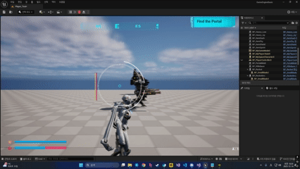
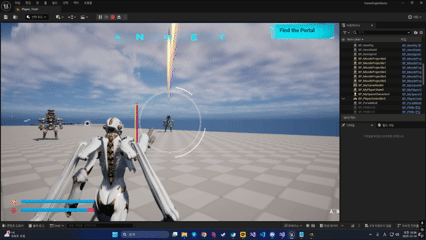
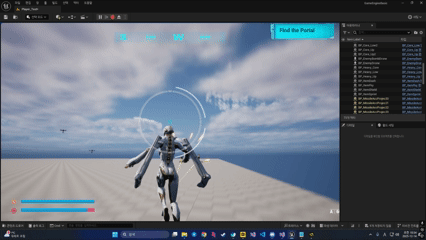
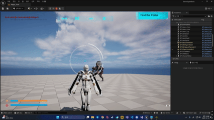
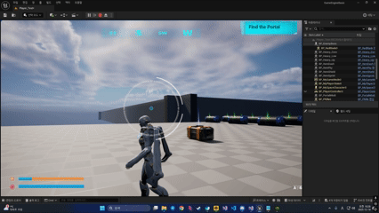
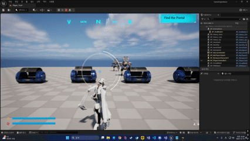

상세설명서
담당 구현: 플레이어 상태 관리, 인터페이스 기반 아이템 상호작용, 아이템과 플레이어 성장 시스템 연결
플레이어가 지상 이동, 조준, 비행, 부스트 등 서로 다른 행동 상태를 안정적으로 전환하고,
월드에 배치된 다양한 아이템을 하나의 상호작용 방식으로 사용할 수 있도록 시스템을 구성했습니다.
또한 아이템 획득 결과가 단순한 오브젝트 제거에서 끝나지 않고 PlayerState, InventoryComponent,
PlayerStatsComponent, SaveGame으로 이어져 실제 플레이어의 능력과 장비, 스탯에 반영되도록 구현했습니다.
게임플레이 구현
전투와 플레이어 능력의 실제 동작을 GIF로 정리했습니다.
전투 시스템



플레이어 이동 및 특수 능력




전체 시스템 요약
세 기능은 독립적으로 동작하는 것이 아니라 하나의 플레이 흐름으로 연결됩니다.
[Player State System]
현재 플레이어 행동을 상태 객체로 관리
│
│ 능력 사용 전 해금 여부 확인
▼
[Player Growth System]
PlayerState가 능력 / 무기 / 파츠 해금 정보 관리
▲
│ 아이템 획득 결과 전달
│
[Interaction System]
IU_Interactable을 통해 다양한 Item과 동일한 방식으로 상호작용실제 게임에서는 다음과 같은 하나의 흐름이 만들어집니다.
플레이어가 아이템에 접근
↓
IU_Interactable 대상으로 등록
↓
상호작용 입력
↓
아이템의 Interact() 실행
↓
PlayerState에 능력 / 장비 해금
↓
Inventory / Stats 갱신
↓
새로운 플레이어 행동 사용 가능
↓
상태 시스템을 통해 해당 행동 실행
↓
SaveGame에 진행 상태 저장담당 구현 핵심 요약
- 플레이어 상태 관리
UCharacterStateBase의 Enter / Tick / Exit를 기반으로 이동, 조준, 비행, 부스트 등 플레이어의 복합 행동을 상태 단위로 분리했습니다.
- 인터페이스 기반 아이템 상호작용
IU_Interactable을 이용해 Player가 아이템의 구체적인 클래스에 의존하지 않고 공통 Interact() 호출로 다양한 오브젝트와 상호작용하도록 구현했습니다.
- 아이템과 플레이어 성장 연결
아이템 획득 결과를 PlayerState → InventoryComponent → PlayerStatsComponent → Character Component로 전달하여 능력 해금, 장비 장착, 스탯 적용, 저장까지 하나의 성장 흐름으로 연결했습니다.
1. 플레이어 상태 관리
문제
플레이어가 사용할 수 있는 행동이 많아질수록 하나의 Character 클래스에서 모든 상태를 if / switch 문과 Boolean 변수만으로 관리하면 로직 간 의존성이 빠르게 증가합니다.
이 프로젝트의 플레이어는 단순 이동뿐 아니라 다음과 같은 서로 다른 행동을 가집니다.
- 일반 이동
- 조준
- 차지 공격
- 비행
- 부스트
- 비행 중 조준
- 비행 중 차지
특히 각 행동마다 CharacterMovementComponent의 이동 모드, 중력, 회전 방식, 카메라 설정, 연료 소비 방식 등이 달라지기 때문에 상태 전환 처리를 한 클래스에 계속 추가할 경우 다음과 같은 문제가 발생할 수 있었습니다.
- 새로운 행동 추가 시 기존 행동의 조건문까지 수정해야 함
- 상태 진입과 종료 시 변경했던 설정을 원래 값으로 복구하기 어려움
- 비행, 조준, 부스트처럼 서로 영향을 주는 행동 사이에서 상태 충돌이 발생할 수 있음
- 하나의 함수가 입력 처리, 상태 검사, Movement 설정 변경까지 모두 담당하게 되어 코드 가독성이 저하됨
목표
플레이어가 현재 수행 중인 행동을 명확한 상태(State) 로 관리하고, 각 상태가 자신의 진입·유지·종료 로직을 담당하도록 구성하는 것을 목표로 했습니다.
구체적으로 다음을 기준으로 설계했습니다.
- 플레이어의 현재 행동을 하나의
ECharacterState값으로 식별할 것 - 각 상태마다 독립적인 객체를 두어 상태별 로직을 분리할 것
- 상태가 변경될 때 이전 상태의 종료 처리와 새로운 상태의 진입 처리를 일관된 순서로 실행할 것
- 매 프레임 필요한 로직은 현재 활성화된 상태 객체만 처리할 것
- 이후 새로운 플레이어 행동이 추가되더라도 기존 상태의 수정 범위를 최소화할 것
설계
플레이어 상태를 다음과 같은 Enum으로 정의했습니다.
UENUM(BlueprintType)
enum class ECharacterState : uint8
{
Locomotion,
Aiming,
Charging,
Flying,
Boosting,
FlyAim,
FlyCharge
};각 상태의 공통 동작을 정의하기 위해 UCharacterStateBase를 만들고, 상태 객체가 다음 세 가지 생명주기를 가질 수 있도록 구성했습니다.
class UCharacterStateBase : public UObject
{
public:
virtual void Enter(ASpaceCharacter* Character);
virtual void Tick(ASpaceCharacter* Character, float DeltaTime);
virtual void Exit(ASpaceCharacter* Character);
};ASpaceCharacter는 상태별 객체를 TMap으로 관리합니다.
TMap<ECharacterState, UCharacterStateBase*> StateMap;
UCharacterStateBase* CurrentStateObject;
ECharacterState CurrentState;게임 시작 시 각 상태 객체를 생성하여 등록했습니다.
StateMap.Add(ECharacterState::Locomotion, NewObject<US_Idle>(this));
StateMap.Add(ECharacterState::Aiming, NewObject<US_Aim>(this));
StateMap.Add(ECharacterState::Flying, NewObject<US_Fly>(this));
StateMap.Add(ECharacterState::Boosting, NewObject<US_Boost>(this));상태 구조
Enhanced Input
↓
ASpaceCharacter
↓
현재 행동과 사용 조건 확인
↓
ChangeState(NewState)
↓
┌───────────────────────────────┐
│ CurrentStateObject -> Exit() │
│ CurrentState 변경 │
│ NewStateObject -> Enter() │
└───────────────────────────────┘
↓
매 Tick에서 현재 State만 Tick()이 구조에서 ASpaceCharacter는 어떤 상태로 전환할지 결정하는 역할을 담당하고, 실제 상태별 설정은 US_Aim, US_Fly, US_Boost 등의 객체가 담당하도록 책임을 분리했습니다.
구현
1) 상태 전환을 하나의 함수로 통일
상태가 변경될 때 기존 상태의 Exit()를 먼저 실행하고, 새 상태의 Enter()를 호출하도록 구현했습니다.
void ASpaceCharacter::ChangeState(ECharacterState NewState)
{
if (CurrentState == NewState)
return;
if (CurrentStateObject)
CurrentStateObject->Exit(this);
CurrentState = NewState;
if (StateMap.Contains(NewState))
{
CurrentStateObject = StateMap[NewState];
CurrentStateObject->Enter(this);
}
}이를 통해 상태마다 변경했던 Movement 또는 Camera 관련 설정을 종료 시점에 다시 복구할 수 있도록 했습니다.
2) 현재 상태만 Tick 처리
ASpaceCharacter::Tick()에서는 현재 활성화된 상태 객체만 업데이트합니다.
if (CurrentStateObject)
{
CurrentStateObject->Tick(this, DeltaTime);
}따라서 비행 중 연료 소비, 조준 중 카메라 전환처럼 특정 상태에서만 필요한 연산을 해당 상태 객체에 배치할 수 있습니다.
3) 비행 상태
비행 상태 진입 시 CharacterMovementComponent를 비행에 맞게 변경했습니다.
Flying 상태 진입
↓
MOVE_Flying으로 변경
↓
GravityScale 감소
↓
AirControl / Braking 설정 변경
↓
날개 애니메이션 실행
↓
매 Tick마다 연료 소비
↓
연료 부족 시 Locomotion으로 전환US_Fly::Tick()에서는 연료를 지속적으로 소비하며, 더 이상 비행할 수 없는 경우 자동으로 일반 이동 상태로 복귀하도록 했습니다.
4) 조준 상태
조준 상태에서는 이동 방향이 아닌 컨트롤러 방향을 바라보도록 회전 방식을 변경하고 카메라 전환을 시작합니다.
Aiming Enter
↓
bOrientRotationToMovement = false
bUseControllerRotationYaw = true
↓
조준용 카메라 위치로 보간상태 종료 시에는 다시 일반 이동용 회전 방식으로 복구합니다.
5) 부스트 상태
부스트는 입력 방향을 기준으로 순간적인 Impulse를 적용하고, 일정 시간이 지나면 상태를 종료하도록 구현했습니다.
Boost 입력
↓
능력 사용 가능 여부 확인
↓
공중 또는 비행 상태인지 검사
↓
Boosting 상태 진입
↓
입력 방향으로 Impulse 적용
↓
연료 소비 + 애니메이션
↓
BoostDuration 경과
↓
Locomotion 상태로 전환결과
플레이어의 행동을 상태 단위로 분리하여 행동 전환과 상태별 설정을 한 곳에서 관리하는 구조를 만들었습니다.
이를 통해 다음과 같은 효과를 얻었습니다.
- 상태마다 필요한 Movement, Camera, Fuel 로직을 별도 클래스로 분리
- 상태 진입과 종료 시점을 명확하게 구분하여 설정 복구 과정을 관리
- 비행 중 연료 부족과 같이 상태 내부에서 발생하는 조건에 따라 다른 상태로 전환 가능
- 플레이어 Character 클래스에 모든 행동의 세부 구현을 집중시키는 것을 방지
- 새로운 행동을 추가할 때
UCharacterStateBase를 상속한 상태 클래스를 추가하는 방향으로 확장 가능
단순히 플레이어의 현재 상태를 저장하는 것이 아니라, 상태 자체가 동작을 가지도록 구성했다는 점에 중점을 두었습니다.
핵심 구현 포인트
플레이어 행동을 Enum으로만 구분하지 않고 상태 객체의Enter / Tick / Exit생명주기로 분리하여, 각 행동이 요구하는 설정과 해제 로직을 독립적으로 관리했습니다.
개선점
현재 구조에서는 CurrentState와 함께 bIsAiming, bIsFlyingMode, bIsBoosting 등의 Boolean 값도 일부 상태 판단에 사용하고 있습니다.
따라서 장기적으로는 현재 상태를 판단하는 기준을 하나의 진실상태로 통합하여 상태 값과 Boolean 값이 서로 불일치할 가능성을 줄일 수 있습니다.
또한 현재 일부 입력 로직은 ASpaceCharacter가 직접 처리하고 있으므로, 규모가 더 커질 경우 상태 객체의 HandleMove, HandleAim, HandleBoost 등의 인터페이스를 적극적으로 활용하여 현재 상태가 입력에 어떻게 반응할지까지 상태 객체에 위임하는 방향으로 확장할 수 있습니다.
추가 개선 방향은 다음과 같습니다.
SetState()와ChangeState()의 역할을 하나로 통합- 상태 간 전환 가능 여부를 Transition Rule로 명시
Flying → Boosting → Flying처럼 이전 상태 복귀가 필요한 행동의 전환 정책 개선- 상태 Debug UI를 추가하여 런타임에서 현재 상태와 전환 과정을 확인
- 상태별 자동화 테스트를 작성해 잘못된 상태 조합을 검증
2. 인터페이스 기반 아이템 상호작용
문제
게임 월드에는 서로 다른 기능을 수행하는 여러 상호작용 오브젝트가 존재합니다.
이 프로젝트에서는 대표적으로 다음 아이템을 구현했습니다.
- 능력 해금 아이템
- 무기 해금 아이템
- 파츠 해금 아이템
- 체크포인트 / 회복 오브젝트
각 오브젝트의 실제 동작은 서로 다르지만 플레이어 입장에서는 모두 "가까이 접근한 뒤 상호작용 키를 누른다"는 동일한 입력 방식을 사용합니다.
만약 플레이어가 아이템의 실제 클래스를 직접 판별하도록 구현하면 다음과 같은 코드가 필요해집니다.
AbilityUnlockItem이면 능력 해금
WeaponItemBox이면 무기 해금
PartUnlockItem이면 파츠 해금
Bonfire이면 회복 및 저장
...이 방식은 새로운 상호작용 오브젝트가 추가될 때마다 ASpaceCharacter를 수정해야 하며, Player와 Item 사이의 의존성이 계속 증가하는 문제가 있습니다.
목표
플레이어가 상호작용 대상의 구체적인 클래스나 기능을 알지 않아도 동일한 방식으로 상호작용을 요청할 수 있는 구조를 만드는 것을 목표로 했습니다.
설계 목표는 다음과 같습니다.
- 플레이어는 현재 대상이 어떤 종류의 아이템인지 판단하지 않을 것
- 모든 상호작용 가능 액터가 동일한 인터페이스를 제공할 것
- 실제 상호작용 결과는 각 Item 클래스가 직접 결정할 것
- 새로운 상호작용 액터를 추가하더라도 Player 코드 변경을 최소화할 것
- Overlap과 UI를 통해 현재 상호작용 가능한 대상을 플레이어에게 전달할 것
설계
Unreal Engine의 UInterface를 이용하여 IU_Interactable을 정의했습니다.
UINTERFACE(Blueprintable)
class UU_Interactable : public UInterface
{
GENERATED_BODY()
};
class IU_Interactable
{
GENERATED_BODY()
public:
virtual void Interact(ASpaceCharacter* Character) = 0;
};플레이어는 현재 상호작용 대상을 구체 클래스 포인터가 아닌 TScriptInterface로 저장합니다.
UPROPERTY(VisibleAnywhere, BlueprintReadOnly)
TScriptInterface<IU_Interactable> CurrentInteractTarget;따라서 ASpaceCharacter는 대상이 능력 아이템인지, 무기 상자인지, 파츠 상자인지 알 필요가 없습니다.
상호작용 구조
상호작용 가능한 Actor
↓
IU_Interactable 구현
↓
Collision Overlap Begin
↓
Character.CurrentInteractTarget = this
↓
상호작용 Widget 표시
↓
Enhanced Input : InteractAction
↓
ASpaceCharacter::TryInteract()
↓
CurrentInteractTarget->Interact(this)
↓
각 Actor가 자신의 기능 수행구현
1) 상호작용 대상 등록
아이템의 CollisionSphere에 플레이어가 진입하면 해당 아이템을 현재 상호작용 대상으로 등록합니다.
if (ASpaceCharacter* Character = Cast<ASpaceCharacter>(OtherActor))
{
Character->CurrentInteractTarget = this;
if (InteractWidget && !bActivated)
InteractWidget->SetVisibility(true);
}플레이어가 범위를 벗어나면 자신이 현재 대상일 경우에만 포인터를 제거합니다.
if (Character->CurrentInteractTarget == this)
{
Character->CurrentInteractTarget = nullptr;
}이를 통해 월드 공간의 상호작용 UI와 실제 입력 가능 상태를 함께 관리했습니다.
2) Player의 공통 입력 처리
Enhanced Input의 InteractAction은 플레이어의 TryInteract()에 연결됩니다.
EnhancedInput->BindAction(
InteractAction,
ETriggerEvent::Started,
this,
&ASpaceCharacter::TryInteract
);TryInteract()는 아이템 종류를 확인하지 않고 인터페이스 함수만 호출합니다.
void ASpaceCharacter::TryInteract()
{
if (!CurrentInteractTarget)
return;
CurrentInteractTarget->Interact(this);
CurrentInteractTarget = nullptr;
}이 부분이 시스템의 핵심입니다.
Player는 상호작용 요청만 전달하고, 요청을 받았을 때 실제로 무엇을 할지는 각 Actor가 결정합니다.
3) 아이템별 기능 분리
예를 들어 능력 아이템은 다음과 같이 능력 해금을 수행합니다.
void AAbilityUnlockItem::Interact(ASpaceCharacter* Character)
{
Character->UnlockAbility(AbilityToUnlock);
bActivated = true;
USaveSystemManager::SavePawnState(Character);
}반면 파츠 아이템은 같은 Interact() 인터페이스를 사용하지만 전혀 다른 로직을 수행합니다.
PartUnlockItem::Interact()
↓
PlayerState에 파츠 해금
↓
Inventory 슬롯에 파츠 장착
↓
PlayerStats 갱신
↓
SaveGame 저장무기 아이템도 동일한 인터페이스에서 PlayerState::UnlockWeapon()을 호출합니다.
즉, 입력 방식은 통일하면서 결과는 각 객체에 위임했습니다.
결과
플레이어와 아이템 사이의 직접적인 클래스 의존성을 줄이고, 서로 다른 상호작용 오브젝트를 하나의 입력 흐름으로 처리할 수 있도록 구성했습니다.
이 구조를 통해 다음과 같은 효과를 얻었습니다.
- Player가 Item의 구체 클래스를 직접 검사하지 않음
- 능력, 파츠, 무기처럼 결과가 전혀 다른 오브젝트도 동일한
Interact()호출로 처리 - 새로운 상호작용 액터가 추가되어도
IU_Interactable만 구현하면 기존 Player 입력 구조를 재사용 가능 - 상호작용 범위 진입/이탈과 World Space Widget을 연결하여 사용자 피드백 제공
- Item이 자신의 상호작용 결과를 직접 책임지도록 역할을 분리
핵심 구현 포인트
Player가AbilityUnlockItem,WeaponItemBox,PartUnlockItem과 직접 결합되지 않도록IU_Interactable을 중간 계약으로 두고, 모든 상호작용을Interact()라는 공통 메시지로 처리했습니다.
개선점
현재 AbilityUnlockItem, PartUnlockItem, WeaponItemBox에는 다음과 같은 공통 로직이 반복되어 있습니다.
CollisionSphereInteractWidgetOnOverlapBegin / OnOverlapEndbActivated- 상자 개방 Timeline
- 획득 UI
- Niagara Effect
- 사용 후 Collision 비활성화
따라서 다음 단계에서는 AInteractableItemBase와 같은 공통 부모 클래스를 두고, 인터페이스는 상호작용 계약을 담당하고 부모 클래스는 반복되는 기본 구현을 담당하도록 분리할 수 있습니다.
IU_Interactable
↑
AInteractableItemBase
├─ AbilityUnlockItem
├─ WeaponItemBox
└─ PartUnlockItem또한 현재는 Overlap된 아이템이 CurrentInteractTarget을 직접 덮어쓰는 방식이므로, 여러 아이템의 상호작용 범위가 겹치는 상황에서는 다음과 같은 방식으로 개선할 수 있습니다.
- 상호작용 후보 목록 관리
- 플레이어와 가장 가까운 대상 선택
- 카메라 중앙에 가까운 대상 우선
- 마지막으로 바라본 대상에 Focus 부여
OnInteractableFocused / Unfocused이벤트 분리
이를 통해 아이템 수가 많아지는 실제 레벨에서도 더 안정적인 상호작용 시스템으로 확장할 수 있습니다.
3. 아이템과 플레이어 성장 시스템 연결
문제
아이템을 획득했을 때 단순히 해당 Actor를 제거하거나 UI만 출력하는 것으로는 플레이어의 성장 시스템이 완성되지 않습니다.
아이템 획득 결과가 실제 게임플레이에 반영되기 위해서는 다음 시스템들이 연결되어야 합니다.
- 플레이어가 특정 능력을 사용할 수 있는지
- 어떤 무기와 파츠를 획득했는지
- 현재 어떤 파츠를 장착하고 있는지
- 장착 파츠가 실제 체력·실드·이동 속도에 어떤 영향을 주는지
- 획득한 진행 정보를 저장하고 다음 플레이에서도 복원할 수 있는지
이 정보들을 모두 ASpaceCharacter에 직접 저장하면 Character가 입력, 전투, 이동, 인벤토리, 진행도까지 모두 책임지게 됩니다.
목표
아이템 획득을 다음과 같은 하나의 성장 데이터 흐름으로 연결하는 것을 목표로 했습니다.
월드 아이템 획득
↓
PlayerState에 해금 상태 기록
↓
InventoryComponent에 장비 상태 반영
↓
PlayerStatsComponent에서 최종 스탯 계산
↓
Character의 실제 Component에 적용
↓
SaveGame에 진행 정보 저장역할별 데이터의 책임을 다음과 같이 나누었습니다.
AMyPlayerState
→ 플레이어의 해금 진행 상태 관리
UInventoryComponent
→ 현재 장착한 무기와 파츠 관리
UPlayerStatsComponent
→ 장착한 파츠를 기반으로 최종 스탯 계산
ASpaceCharacter
→ 계산된 값을 실제 Movement, Health, Shield, Fuel에 반영하고 능력 입력 실행
USaveSystemManager
→ 해금 정보를 SaveGame에 저장 및 복원
설계
1) PlayerState — 영구적인 해금 정보
능력 상태와 무기·파츠 해금 상태를 AMyPlayerState에서 관리했습니다.
USTRUCT(BlueprintType)
struct FUnlockStatus
{
GENERATED_BODY()
TSet<FName> UnlockedWeapons;
TSet<FName> UnlockedParts;
};능력은 각 기능의 사용 가능 여부로 저장했습니다.
USTRUCT(BlueprintType)
struct FAbilityUnlockStatus
{
GENERATED_BODY()
bool bCanSprint = false;
bool bCanDash = false;
bool bCanFly = false;
bool bCanShield = false;
bool bCanBoost = false;
};ASpaceCharacter가 능력을 실행하기 전에는 PlayerState에 사용 가능 여부를 확인합니다.
AMyPlayerState* PS = GetPlayerState<AMyPlayerState>();
if (!PS || !PS->CanUseAbility(EAbilityType::Flying))
return;따라서 아이템 획득 여부가 실제 플레이어 입력 가능 여부에 직접 연결됩니다.
2) InventoryComponent — 장착 상태
파츠는 Core, Upper, Lower 세 슬롯으로 구분했습니다.
UENUM(BlueprintType)
enum class EPartSlot : uint8
{
Core,
Upper,
Lower
};현재 장착 중인 파츠는 슬롯과 DataTable RowName의 Map으로 관리합니다.
TMap<EPartSlot, FName> EquippedParts;아이템을 획득하면 해금과 장착을 순서대로 수행합니다.
PartUnlockItem
↓
PlayerState::UnlockPart()
↓
InventoryComponent::EquipPart()
↓
PlayerStatsComponent::ApplyParts()3) DataTable 기반 파츠 데이터
파츠의 능력치는 코드에 직접 작성하지 않고 FPartData 형태로 DataTable에서 관리하도록 구성했습니다.
struct FPartData : public FTableRowBase
{
EPartSlot Slot;
float HealthBonus;
float ShieldBonus;
float MoveSpeedBonus;
float BoostUseBonus;
float BoostRegenBonus;
float WeightBonus;
};따라서 파츠의 밸런스 수치는 C++ 로직을 수정하지 않고 데이터에서 조정할 수 있습니다.
구현
1) 능력 아이템 → 능력 사용 가능 상태
능력 아이템을 사용하면 다음 흐름으로 처리됩니다.
AbilityUnlockItem::Interact()
↓
ASpaceCharacter::UnlockAbility()
↓
AMyPlayerState::UnlockAbility()
↓
FAbilityUnlockStatus 변경
↓
능력 해금 Animation/UI 출력
↓
SavePawnState()이후 플레이어가 Sprint, Dash, Flying, Shield, Boost 입력을 사용하면 각각 CanUseAbility()를 확인합니다.
예를 들어 비행은 다음과 같습니다.
Fly 입력
↓
CanUseAbility(Flying)
↓
false → 입력 무시
true → 연료 확인
↓
Flying 상태 진입즉, 아이템 획득 → 데이터 변경 → 플레이어 행동 해금의 관계를 구성했습니다.
2) 파츠 아이템 → 장착 → 스탯 적용
파츠 아이템 획득 시 PlayerState에 해금 정보를 저장한 뒤 바로 Inventory 슬롯에 장착합니다.
PS->UnlockPart(PartRowName);
if (PS->Inventory)
{
PS->Inventory->EquipPart(Slot, PartRowName);
}EquipPart()는 장착 정보를 갱신한 후 PlayerStatsComponent::ApplyParts()를 호출합니다.
스탯 계산 시 기존 장비 보너스가 계속 더해지는 것을 방지하기 위해 먼저 최종 스탯을 기본 스탯으로 초기화하고, 현재 장착된 세 파츠를 다시 계산하도록 구성했습니다.
FinalStats = BaseStats;이후 슬롯별 파츠 데이터를 순회합니다.
BaseStats
↓
Core 파츠 데이터 합산
↓
Upper 파츠 데이터 합산
↓
Lower 파츠 데이터 합산
↓
FinalStats계산이 끝나면 실제 플레이어 컴포넌트에 반영합니다.
FinalStats.MoveSpeed
→ CharacterMovement.MaxWalkSpeed
FinalStats.MaxHealth
→ HealthComponent.MaxHealth
FinalStats.MaxShield
→ ShieldComponent.MaxShield
FinalStats.BoostRegen
→ FuelComponent.RechargeRate이를 통해 아이템 데이터가 실제 플레이 감각에 영향을 주도록 연결했습니다.
3) 무기 / 파츠 / 능력 진행 정보 저장
아이템 획득 후 USaveSystemManager::SavePawnState()를 호출하여 해금 정보를 SaveGame에 기록합니다.
저장 대상에는 다음과 같은 정보가 포함됩니다.
- 능력 해금 상태
- 해금된 무기 목록
- 해금된 파츠 목록
- 탄약 정보
- 체크포인트 위치 및 회전 정보
로드 시에는 저장된 데이터를 다시 PlayerState에 복원하고, 무기 시스템을 초기화하도록 구성했습니다.
SaveGame Load
↓
PlayerState AbilityStatus 복원
↓
UnlockedWeapons 복원
↓
UnlockedParts 복원
↓
Character Weapon 초기화따라서 아이템 획득이 한 세션에서 끝나는 이벤트가 아니라 플레이어 진행 데이터로 유지될 수 있는 기반을 구성했습니다.
결과
아이템 획득과 플레이어의 실제 성장 로직을 분리된 시스템 사이의 데이터 흐름으로 연결했습니다.
이를 통해 다음과 같은 구조를 만들었습니다.
- 능력 아이템 획득 여부가 Sprint / Dash / Flying / Shield / Boost 입력 가능 여부에 반영
- 무기와 파츠의 해금 상태를 PlayerState에서 일관되게 관리
- 파츠 장착 상태와 파츠 해금 상태를 분리
- DataTable의 파츠 데이터를 읽어 현재 장착 상태에 따라 최종 스탯을 재계산
- 계산된 결과를 Movement, Health, Shield, Fuel Component에 실제 적용
- 획득한 진행 정보를 SaveGame으로 연결
특히 하나의 아이템 클래스가 플레이어의 모든 값을 직접 변경하는 방식이 아니라 다음과 같이 역할을 나눈 것이 핵심입니다.
Item
│ "획득"
▼
PlayerState
│ "무엇을 해금했는가?"
▼
Inventory
│ "무엇을 장착했는가?"
▼
PlayerStats
│ "현재 최종 스탯은 얼마인가?"
▼
Character Components
"게임플레이에 적용"핵심 구현 포인트
아이템의 획득 결과를PlayerState → Inventory → PlayerStats → Character Component로 전달하여, 진행 데이터와 장비 데이터, 실제 플레이어 능력치를 역할별로 분리했습니다.
개선점
현재 성장 시스템은 기능 단위 연결이 완료되어 있지만, 저장과 장비 데이터의 책임을 더 명확하게 정리할 수 있습니다.
1) SaveGame 데이터 완전성 개선
현재 저장 구조에서는 능력, 무기, 파츠 해금 정보를 관리하고 있지만 장기적으로는 다음 정보까지 명시적으로 저장하는 구조가 필요합니다.
- 현재 장착 중인 Core / Upper / Lower 파츠
- 현재 장착 중인 무기
- 무기별 개별 탄약 Runtime State
- Boost 능력 해금 상태의 저장/복원 일관성
- 플레이어의 체력, 실드, 연료 상태
이를 하나의 FPlayerProgressData 구조체로 묶으면 Save / Load 시 누락되는 데이터를 줄일 수 있습니다.
2) Inventory와 PlayerState의 책임 정리
현재 InventoryComponent가 PlayerState에 소유되어 있으므로 장착 가능 여부를 확인할 때도 Owner가 PlayerState라는 사실을 기준으로 접근하도록 정리할 수 있습니다.
이를 통해 다음 책임을 명확하게 만들 수 있습니다.
PlayerState
├─ Unlock Progress
└─ Inventory
├─ Equipped Weapon
└─ Equipped Parts3) 스탯 계산을 순수 계산과 적용 단계로 분리
현재 ApplyParts()에서 파츠 데이터를 계산한 뒤 Character Component에 즉시 적용합니다.
규모가 커질 경우 다음과 같이 두 단계로 분리할 수 있습니다.
CalculateFinalStats()
↓
FPlayerStats 반환
↓
ApplyStatsToCharacter()이렇게 구성하면 장비 UI에서 "장착하기 전 예상 스탯"을 표시하거나 서버에서 스탯 계산 결과를 검증하는 기능으로 확장하기 쉬워집니다.
4) Gameplay Tag / Gameplay Ability System으로 확장 가능
능력의 종류가 크게 늘어날 경우 개별 Boolean 필드를 계속 추가하는 대신 Gameplay Tag 또는 GAS의 Ability 부여 방식으로 확장할 수 있습니다.
현재 구조는 작은 규모에서 명확하게 동작하도록 구성했고, 프로젝트 규모가 커질 경우 데이터 중심의 Ability 시스템으로 확장 가능한 기반으로 사용할 수 있습니다.